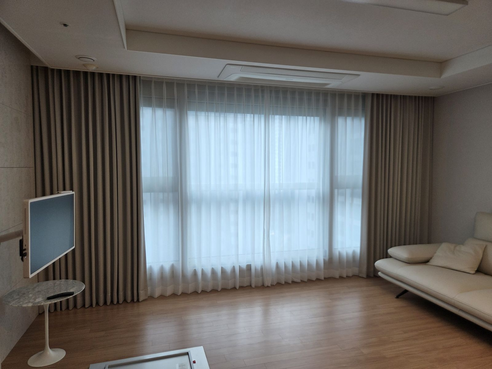

서울 강남구 커튼 · 블라인드
방문 실측 · 맞춤 시공
서울 강남구 전 지역 무료 방문 실측. 원단 샘플을 들고 찾아가 창에 직접 대 보며 상담합니다.

LOCAL NOTE
강남의 집들을 다니며
알게 된 것
강남구는 고층 아파트의 넓은 거실 통창과 재건축 신축 단지 입주가 많은 지역입니다. 창이 크고 층이 높을수록 햇빛과 시선 관리가 함께 필요해, 린넨과 쉬폰을 이중으로 거는 구성을 많이 추천드려요.
재건축 신축 단지는 입주 일정이 몰리는 시기에 실측 예약이 빠르게 찹니다. 입주 3~4주 전에 실측을 잡아 두시면 이사 당일에 맞춰 시공할 수 있어요.
강남에서 많이 찾는 제품
- 린넨 커튼 — 자연스러운 결과 은은한 채광
- 쉬폰 커튼 — 낮에는 가볍게, 밤에는 레이어드
- 전동 커튼 · 블라인드 — 높은 창도 리모컨 하나로
COVERAGE
서울 강남구 방문 가능 지역
아래 동네 외에도 서울 강남구 전 지역 방문 실측이 가능합니다.
- 압구정동
- 신사동
- 논현동
- 청담동
- 삼성동
- 대치동
- 역삼동
- 도곡동
- 개포동
- 일원동
- 수서동
- 세곡동